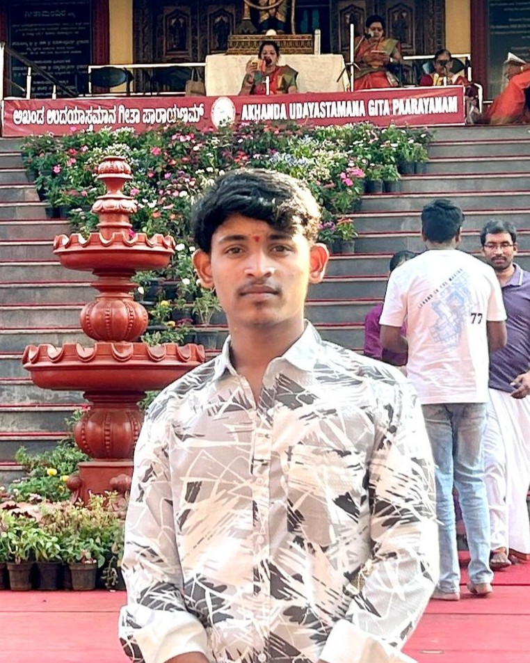

Project code and public work
Explore my repositories, project source code, and the web development work I am actively building and improving.
GitHub ProfileBCA Student / Web Developer / Continuous Learner
I'm Nitin Mali, a BCA undergraduate student from Maharashtra who enjoys turning ideas into responsive websites and beginner-friendly web applications with clear structure and thoughtful UI.
About
Hey, my name is Nitin Mali. I am a BCA undergraduate student who enjoys learning by building. My main interests are web development, clean interface design, and creating websites that feel simple, modern, and easy to use.
I am growing through academic learning, self-practice, coding platforms, and project-based work. I care about responsive layouts, readable design, and building a solid base in frontend and backend development.

Coding Profiles
Explore my repositories, project source code, and the web development work I am actively building and improving.
GitHub ProfileShowcase my problem-solving skills and coding practice through LeetCode challenges and competitions.
LeetCode ProfileSelected work
Student project
A personal portfolio website designed to present my profile, projects, certificates, and coding journey in a clear and professional format.
View ProjectFinal Year Project
Built a quiz platform that improves the traditional quiz process with instant scoring, better interaction, and a smoother digital experience for users.
View on GitHubMini Project
Developed a browser-based Tic Tac Toe game with score tracking, a CPU opponent, and a simple interface to practice logic and interaction design.
View ProjectCertificates
HackerRank Python certificate showing my understanding of basic Python concepts and foundational problem-solving skills.
View CertificateCoursera certificate covering data analysis, visualization, spreadsheets, SQL, and practical thinking for working with data.
View CertificateIBM-backed course introducing SQL queries, relational database concepts, and the basics of structured data handling.
View CertificateEducation
CB Khedgi's College Akkalkot, affiliated with Solapur University
Pursuing a Bachelor of Computer Applications while building practical knowledge in web development, programming fundamentals, and software problem solving.
Projects, coding platforms, and guided courses
Alongside academics, I improve my skills through personal projects, online certifications, GitHub practice, and coding problem solving.
Building confidence through real implementation
My current focus is improving JavaScript, PHP, SQL, and project structure so I can build more complete end-to-end applications.
Contact
I am open to internships, learning opportunities, collaborations, and roles where I can keep improving as a developer while contributing with sincerity and consistency.